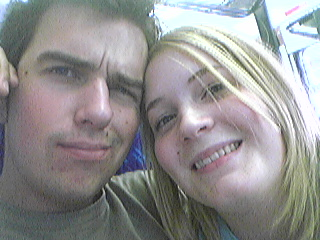
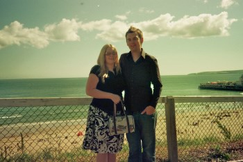
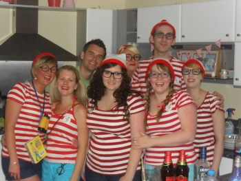
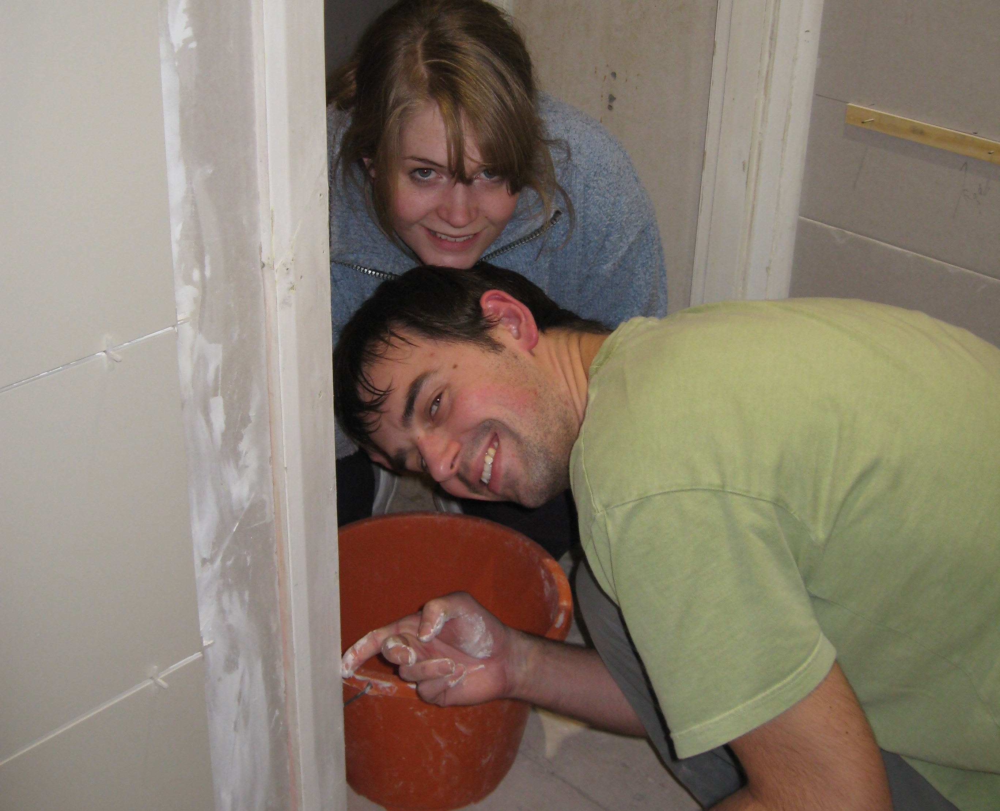
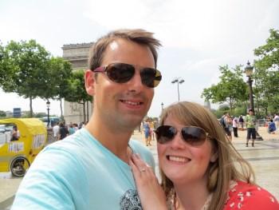
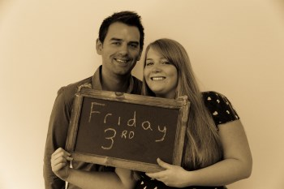

We first met at Tom Wrenn’s 18th birthday party in summer of 2004, Tom remembers this day like it was yesterday, and he specifically remembers realising that Michaela’s dad owned a boat and kept it Portchester sailing club – the same club Tom was a member of for years, but our paths never met. Tom had just finished his A-levels and Michaela had just finished her AS-levels so the summer of 2004 was full of friends, house parties, BBQ’s and hanging out at Port Solent.


After a fantastic summer together, Tom then went to Bournemouth University and we took it in turns to visit each other at the weekends. A year later Michaela was accepted into Bournemouth University and we decided to rent a flat together. At the time this seemed perfectly normal, however looking back we can’t believe that friends and family didn’t question whether this was too soon and we were too young moving in together at the tender age of 19, they must have known that we were meant for each other!
After graduating and starting ‘proper grown up’ jobs the next task was to start saving for a home of our own, but in the meantime we thought it would be cool to move somewhere that we wouldn’t buy (or be able to afford to buy!). The flat in Richmond Gate was in Bournemouth town centre, we had a balcony, sea views and a kitchen to die for. Many awesome parties took place at this flat; from Where’s Wally, to Cupcakes and Cocktails. We are lucky to have so many great friends who love a good party!


After working hard and saving hard, we bought our first home on the 21st December 2012. We wanted a bit of a project to make our money go further and a project is what we got! Although it doesn’t feel like it sometimes, we’ve come so far in such a short space of time, we couldn’t have got to where we are without our friends and family, and B&Q being open until 9pm when we ran out of materials at 8.30pm!
After ploughing money into the house Michaela kept seeing her forever longed for engagement ring getting further and further away. But Tom surprised Michaela by proposing in Paris on our 9th Anniversary and made Michaela the happiest girl alive. The summer of 2013 consisted of various gatherings celebrating our engagement with our friends and family. And then the wedding plans started………


So that was a snippet of the last 10 years, where we found each other, fell in love, made a home together and became engaged. The next chapter begins on the 3rd July and we cannot wait for you to witness it, and celebrate with you all.
Parley Manor was the first wedding venue we visited and we instantly fell in love with the Manor house, the marquees, the beautifully kept grounds, and the fact that we could enjoy the day with just our closest friends and family. We also wanted a venue where we could hold our ceremony and our wedding reception to save people driving to different locations, so as soon as you arrive you can sit back, relax and enjoy the celebrations!
Due to the nature of the venue we will be standing on grass during the drinks reception (as long as the sun is shining!) and you will have an opportunity to walk around the grounds so just be careful with those heels ladies! There is parking available at Parley Manor where cars can be kept overnight and picked up Saturday morning.
Ceremony - 1.30pm
Evening reception - 7.30pm
Here are some of our recommendations, we will be staying in The Green House which is located in Bournemouth town centre.
To the face of it, The Green House is simply a beautifully restored, 32-room Grade II Victorian villa in the heart of Bournemouth, perfectly nestled between Dorset’s finest blue-flag golden beaches and the ancient mysteries of the New Forest.
from £149 per room inc. B&B
Hotel Miramar is a beautiful country house hotel in an idyllic location on the cliff top in Bournemouth with stunning views across Bournemouth bay.
from £140 per room inc. B&B
The Village is situated on the outskirts of Bournemouth providing a convenient location for the wedding venue.
from £75 per room
We have been together for ten years, rented a couple places, bought a house, and accumulated a lot of stuff. We have plenty of vases and too much crockery, so if you would like to express your wishes as a gift for our future marriage we would love if you could contribute towards our honeymoon.
Number - 30041
We have a professional photographer but they won't capture every moment. We would like to collate everyone's photos so after the event we would appreciate if you can upload your best shots for us.